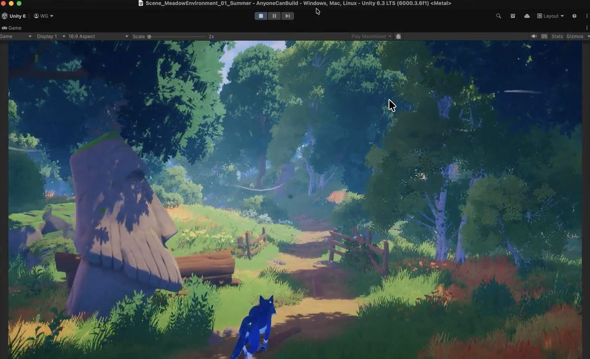
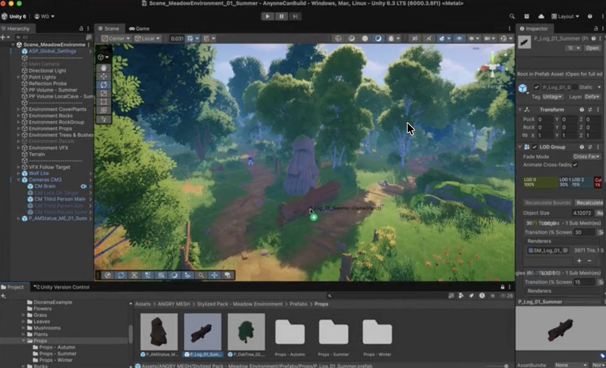

清水 ラファエル
広島で生まれ育ち、現在は栃木を拠点に活動しています。 2025年8月に動画編集をスタートし、YouTube動画編集を中心に技術を磨いてきました。
「わかりやすく」「テンポよく」「伝わる」編集にこだわり、 一本一本の動画に丁寧に向き合っています。 クライアントの目的やチャンネルの世界観に寄り添った制作を心がけています。
清水ラファエル(Hiroshima Frame Studio)についてご紹介します。
広島で生まれ育ち、現在は栃木を拠点に活動しています。 2025年8月に動画編集をスタートし、YouTube動画編集を中心に技術を磨いてきました。
「わかりやすく」「テンポよく」「伝わる」編集にこだわり、 一本一本の動画に丁寧に向き合っています。 クライアントの目的やチャンネルの世界観に寄り添った制作を心がけています。
実は動画編集の合間に、趣味で新作ゲームの設計にも手を出しています。
需要があるかは謎ですが、遊びでこんなこともしてますよははは。


※画像はイメージです笑